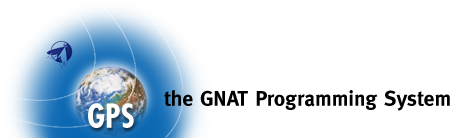

Welcome to the GNAT Programming System
Version 1.2.2
2003/07/15
Ada Core Technologies
ACT Europe
GPS is a complete integrated development environment that gives access
to a wide range of tools and integrates them smoothly.
Online Documentation
GPS comes with a tutorial that gives an overview of the functionalities by
going through a complete session, and a User's Guide documenting each
tool and modules.
Features
- Developer-friendly
- Multi-language: Ada, C, C++
- Multi-platform
- Same modern GUI available on all platforms
- Flexible MDI (multiple document interface)
- Customizable
- Extensible: can integrate preferred tools
- Free Software
Tools
- Language-sensitive editor
- Automatic generation of body files
- Source code reformatting
- Intelligent source code navigation
- Context-sensitive search and replace
- Application builder
- Automatic code fixing
- Version control (CVS, ClearCase, etc.)
- Visual file comparison
- Graphical source-level debugger
- Project and program entities explorer
- Project wizard
- Types and program entities graphs
- Call graphs
- File dependency graphs
- Project dependency graphs
Copyright (C) 2002-2003, ACT Europe.